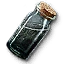
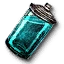
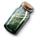
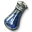
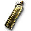
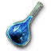
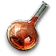
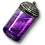
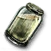
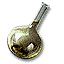

Potions
-  Black Blood
Increases resistance to bleeding. When damaged by Vampires or Necrophages, they take damage and poise damage in return.
+40% Damage returned
+40% Resistance to bleeding
Superior Effect: Damage returned also lowers morale.-  Blizzard
Increases adrenaline generation, and when an enemy begins an attack, time slows for a short period.
+40% Slowdown
+20% Adrenaline gain
Superior Effect:-  Cat
Increases movement speed, movement efficiency, and safe dodge angle.
+12% Movement speed
+20 Evasion safe angle bonus
+20% Movement efficiency
Superior Effect: Immune to stagger while dodging.-  Full Moon
Increases maximum vitality and resistance to injuries.
+20% Vitality
+60% Resistance to injuries
Superior Effect: At night, received damage cannot be more than 1/6 max vitality. During a full moon, 1/8 max vitality.-  Golden Oriole
Increases resistance to poisoning and poison damage, and hastens the reduction of poison stacks.
+50% Resistance to poisoning
50% Poison stack timer reduction
Superior Effect:- Maribor Forest
Increases vigor regeneration.
+40% Vigor regen
-40% Vigor regen penalty from toxicity
Superior Effect: When imbibed, heals Vitality percent equal to Toxicity percent. Can now contain secondary substances.-  Petris Philter
Increases Sign intensity.
+20% Sign intensity
Superior Effect:-  Swallow
Increases vitality regeneration. The effect is paused for 2 seconds upon receiving damage.
+40 Vitality regeneration
60% Bleed stack timer reduction
+30 Injury heal
Superior Effect: Duration doesn't decrease while Vitality is full-  Tawny Owl
Increases stamina regeneration and offensive stamina efficiency.
+2 Stamina regeneration
+10% Offense efficiency
Superior Effect:- Tiara
Increases poise, defensive stamina efficiency, and reduces damage taken through counters and parries.
+40% Damage reduction through blocks
+20% Defense efficiency
+20 Poise
Superior Effect: Immune to stagger while parrying-  White Honey
Drains active and dormant toxicity and cures toxicity fever, but cancels all active potions.
50% Active toxicity drain
75% Dormant toxicity drain
Superior Effect: Delays the removal of Potion Effects by 10 seconds-  White Raffard
Greatly increases vitality regeneration.
+150 Vitality regeneration
50% Bleed stack timer reduction
Superior Effect: When imbibed, heals 30% of missing Vitality